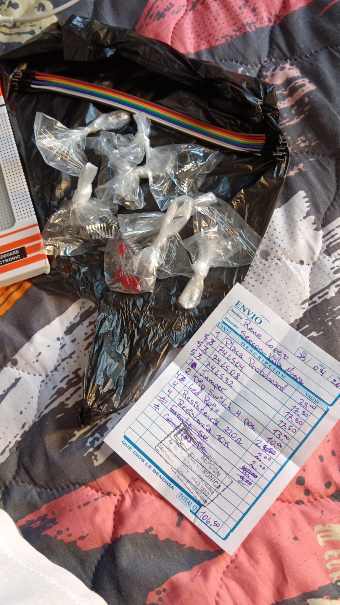

La lógica de sistemas es un enfoque estructurado y formal que permite analizar, modelar y resolver problemas complejos descomponiéndolos en partes interrelacionadas, más allá de la lógica matemática tradicional.
Mi Experiencia en el Curso
Para mí, este curso es la base de la carrera. Trabajar con el protoboard me ayudó a ver de forma práctica cómo se conectan los componentes y me entrenó para pensar y resolver problemas de manera mucho más ordenada y paso a paso.
Lo que he aprendido
80%
Proyecto del curso

Protoboard
Este proyecto fomenta la aplicación de la lógica de sistemas como herramienta de análisis y solución, fortaleciendo la creatividad, el trabajo en equipo y la capacidad de estructurar procesos de manera clara y eficiente.